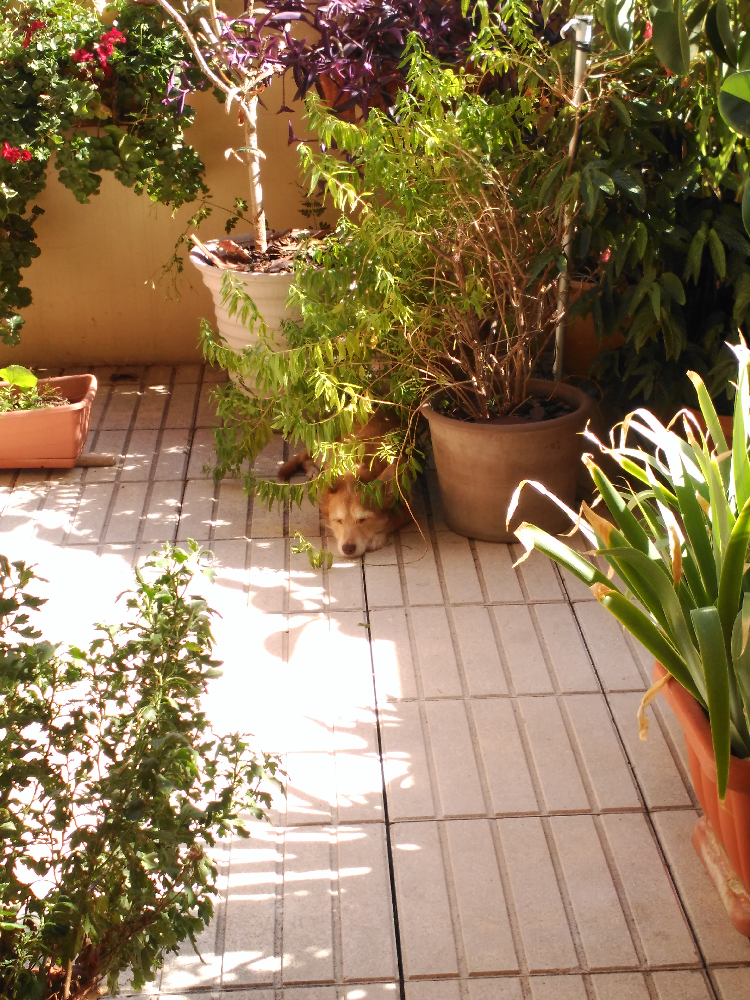
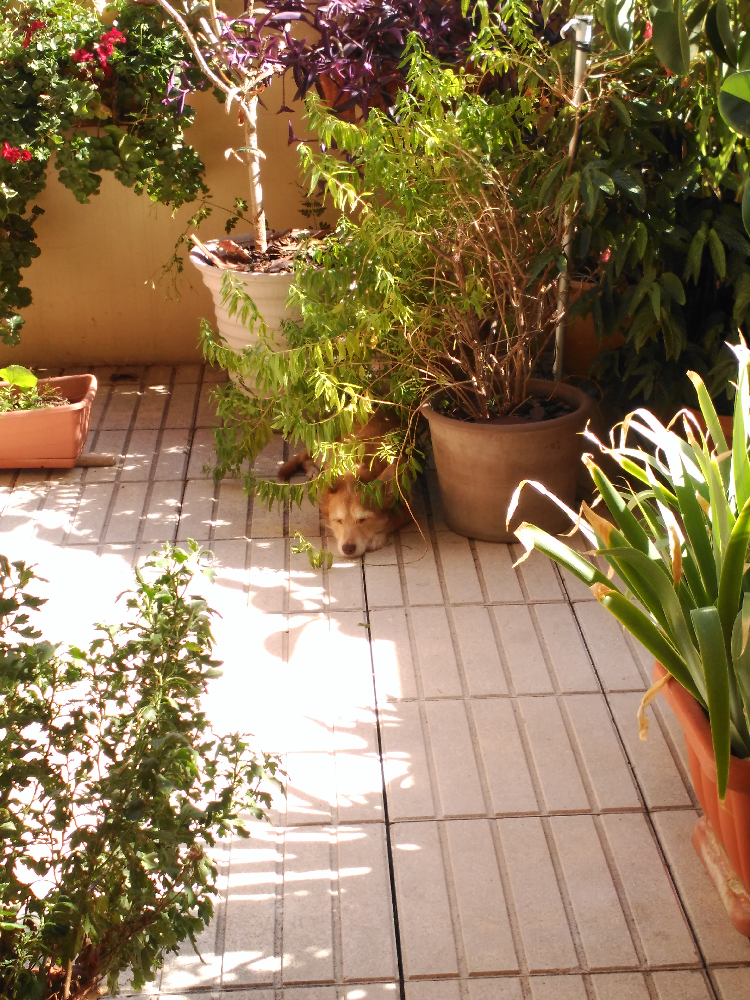
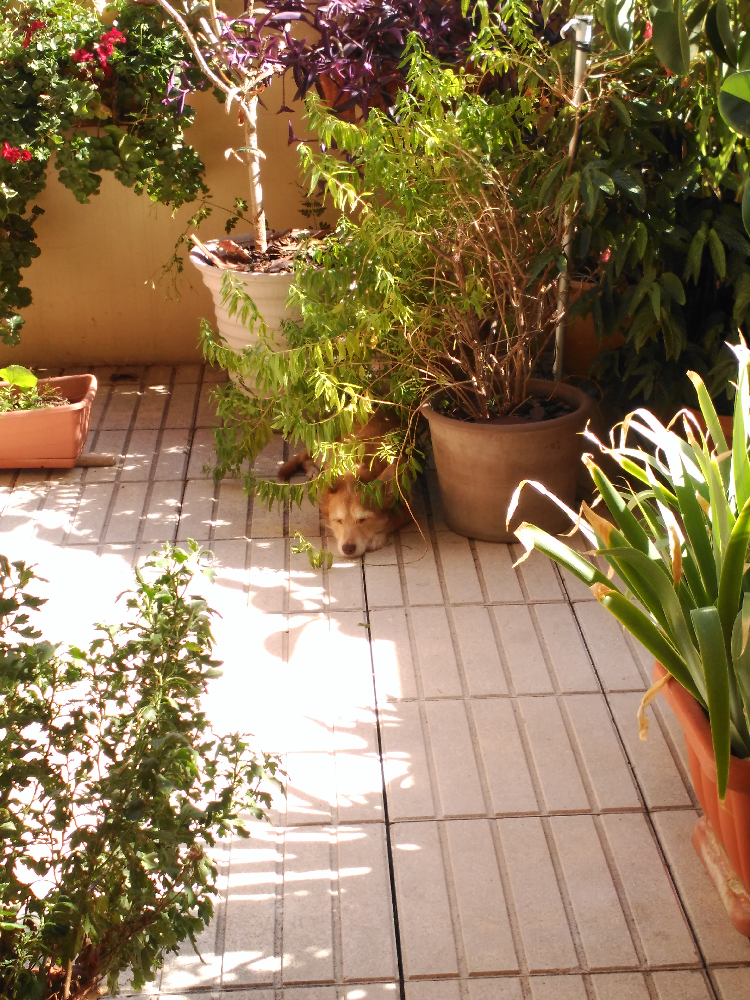

Galería de fotos
 


Como todos los perros, las aficiones favoritas son pedir caricias, tomar el sol, correr, comer y dormir. ¿Pueden llamarse aficiones a estas dos últimas actividades? Creemos que sí, porque Telma las convierte en un arte.
Sin embargo, no le vale correr en cualquier sitio, del mismo modo que no le gusta cualquier cosa para comer o no le gusta dormir sobre cualquier superficie.
Telma adora correr por la arena de la playa y en su riachuelo favorito (os hemos dejado un vídeo y la localización). También le encanta correr por el monte, y en la ciudad es una asidua a las pistas de patinaje o cualquier otro suelo bien pulido donde poder derrapar.
Sin embargo, cuando se trata de tumbarse al sol, cualquier sitio le vale.
No le vale cualquier comida. Es una amante del pescado, y el salmón es su favorito.
A la hora de dormir, necesita una zona bien mullida, alejada de posibles peligros (puertas que se muevan con el viento, cosas que se puedan caer, etc.). Cuando se trata de dormir en la naturaleza, una zona de hierba fresca y alta se convierte en una cama excelente, y cuando está en la playa le encanta excavar agujeros en la arena para después echarse una siestecita en ellos.
